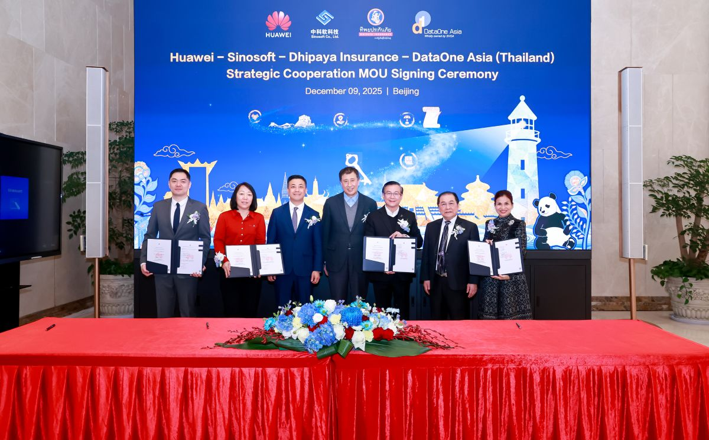

<html>
<title>Huawei Tanıtım</title>
<link rel="stylesheet" type="text/css" href="../haberler.css">
<meta charset="UTF-8">
</html>


<body>


<div class="navigasyon_bar">

	<a href="../haberler.html"> <div class="ic_div">  </div> </a>
	

	<a href="../../huawei_hakkında/huawei_hakkinda.html"> <div class="ic_div"> Huawei Hakkında </div> </a>
	<a href="../../urunler/urunler.html"> <div class="ic_div"> Ürünler </div> </a>

	<a href="../../sürdürülebilirlik/sürdürülebilirlik.html"> <div class="ic_div"> Sürdürülebilirlik </div> </a>

	<a href="../../eğitim/egitim.html"> <div class="ic_div"> Eğitim </div> </a>
	<a href="../../haberler/haberler.html"> <div class="ic_div"> Haberler </div> </a>

</div>

<!------------------------------------------------------------>

<div class="haber_sayfasi">
<h1 class="baslik">
Dhipaya, geleceğe hazır bir temel platform oluşturmak için Huawei, DataOne Asia ve Sinosoft ile ortaklık kurdu.
</h1>

<p class="metin">
<br><br><br>

[Pekin, Çin, 9 Aralık 2025] Huawei bugün, Tayland'ın önde gelen sigorta şirketlerinden Dhipaya Insurance Public Company Limited'in (“Dhipaya Insurance”) BT altyapısını yükseltmek için önemli bir stratejik ortaklık duyurdu ve bu, şirketi “geleceğin sigorta sağlayıcısı” haline dönüştürme yolunda önemli bir adım oldu. Çin'in önde gelen sigorta yazılım sağlayıcısı Sinosoft Co., Ltd. (“Sinosoft”) ve Tayland'ın önde gelen sistem entegratörlerinden DataOne Asia (Thailand) Co., Ltd. (“DataOne”) ile iş birliği içinde, üç taraf birlikte Dhipaya Insurance'ın temel sigorta platformunu modernize ederek yeni, müşteri odaklı ürün ve hizmetlerin geliştirilmesini sağlayacak.

<br><br>




Huawei Enterprise Thailand Başkanı William Zhang, Sinosoft Company Limited'in Kıdemli Başkan Yardımcısı Wang Xin, Dhipaya Group Holdings PCL CEO'su Dr. Somporn Suebthawilkul ve DataOne Asia (Thailand) Co., Ltd. CEO'su Bayan Sochipun Vajropala, Dhipaya Sigorta için yeni nesil bir BT sistemi geliştirmek üzere stratejik bir ortaklık anlaşması imzaladı.

<br><br><br>


Dhipaya Sigorta'nın yeni nesil temel platformu, Huawei Dijital Finans İş Birimi ve Sinosoft'un ortak çözümü üzerine inşa edilmiştir. Huawei Cloud Stack (HCS), GaussDB veritabanları ve yüksek performanslı depolama ve ağdan yararlanan çözüm, sistem yükseltmeleri için sağlam ve güvenilir destek sağlar. Bu, Huawei'nin Finansal Ortak RongHai Programı'nın küresel çapta yaygınlaştırılmasında yeni bir dönüm noktasıdır.

 <br><br><br>


Huawei Dijital Finans CEO'su Jason Cao, Dhipaya Sigorta'ya Huawei'ye duydukları güven için teşekkür etti. Çin sigorta sektöründeki yıllardır süregelen dijital dönüşüm uzmanlığına dayanarak, Huawei Sigorta İş Birimi, küresel sigortacıların dijital temellerini güçlendiren ve sektörün akıllı evrimini hızlandıran temel modernizasyon çözümleri sunmak için önde gelen ortaklarla iş birliği yapmıştır. RongHai Programı aracılığıyla Huawei, Çin'in en iyi bağımsız yazılım tedarikçileri (ISV'ler), seçkin yerel sistem entegratörleri (SI'lar) ve sektör müşterileriyle iş birliği yaparak dört taraf arasında ortak başarı yaratmaya kendini adamıştır. Dhipaya Sigorta projesi, bu iş birliği modelinin Asya-Pasifik bölgesinde en iyi uygulama örneği olarak gösterilmektedir.
 <br><br><br>


Huawei Technologies (Thailand) Co., Ltd.'nin Kurumsal İşletmeler Başkanı William Zhang, bu iş birliğini Huawei'nin dijital dönüşümün kritik bir aşamasında sigorta sektörünü güçlendirmek için teknolojik uzmanlığını sunması açısından dönüm noktası niteliğinde bir fırsat olarak nitelendirdi. Bu ortaklık kapsamında Dhipaya Insurance, inovasyonu daha iyi desteklemek ve gelişen müşteri beklentilerini karşılayan ürün ve hizmetler sunmak için temel sistemini geliştirecektir.
 <br><br><br>


William Zhang, “Bu ortaklık, Tayland'da sigortacılığın geleceğine öncülük etme konusundaki ortak vizyonumuzu yansıtıyor. Sadece teknoloji sağlamakla kalmıyor, aynı zamanda Dhipaya Sigorta'nın müşterilerine hizmet etme, ürünlerde yenilik yapma ve Tayland sigorta sektörü için yeni standartlar belirleme yeteneğini doğrudan geliştiren çözümler yaratmak için uzun vadeli stratejik bir ilişki kuruyoruz” dedi.
 <br><br><br>


Sinosoft Co., Ltd. Başkanı Zuo Chun, Sinosoft'un Huawei ve DataOne ile birlikte bu büyük ölçekli temel sigorta sistemi projesini yürüten kilit yazılım sağlayıcısı rolünü vurguladı. Şirketin Dhipaya Sigorta ve müşterilerine verimli, güvenli ve geleceğe hazır çözümler sunma taahhüdünü yineledi.
 <br><br><br>


Dhipaya Group Holdings Public Company Limited'in CEO'su ve Dhipaya Insurance Public Company Limited'in Genel Müdürü Dr. Somporn Suebthawilkul, Dhipaya Insurance'ın Tayland sigorta sektörünün geleceğini şekillendirme konusundaki kararlılığını sürdürdüğünü belirtti. Devlet kurumlarına, büyük şirketlere, KOBİ'lere ve bireysel poliçe sahiplerine 74 yılı aşkın süredir güvenilir hizmet sunan şirket, güvenilirlik, koruma ve gönül rahatlığı konusunda bir itibar kazanmıştır. Gelecekte Dhipaya, tüm müşteri gruplarının ihtiyaçlarına giderek daha fazla kişiselleştirilmiş ve uygun sigorta çözümleri oluşturmak için en son teknolojilerden yararlanacaktır.
 <br><br><br>


“Temel sistem, herhangi bir kuruluşun, özellikle de güvenlik, güvenilirlik ve itimatın hem bireysel hem de kurumsal müşteriler için son derece önemli olduğu sigorta sektöründe, BT'nin omurgasını oluşturur. Huawei, Sinosoft ve DataOne ile olan iş birliğimiz, sistemlerimize olan güveni pekiştiren ve şirketin gelecekteki zorluklarla başa çıkmak için teknolojik temelini güçlendiren önemli bir dönüm noktasıdır,” dedi Dr. Somporn.
 <br><br><br>


DataOne Asia (Thailand) Co., Ltd.'nin CEO'su Bayan Sochipun Vajropala, bu ortaklığın, Dhipaya Insurance'ın temel sistemini yükseltmesine ve Tayland'da yenilikçi, geleceğe yönelik sigorta hizmetleri için zemin hazırlamasına destek olmak üzere önde gelen teknoloji sağlayıcılarını bir araya getirdiğini belirtti. DataOne, bankacılık, bankacılık dışı sektörler, sigorta, hastane, telekomünikasyon, perakende ve devlet kurumları gibi çeşitli sektörlere hizmet veren uçtan uca BT çözümleri ve hizmet sağlayıcıları konusunda önde gelen bir uzman olmaya devam ediyor. Tayland BT çözümleri sektöründe 35 yılı aşkın deneyime sahip olan DataOne, hem yurt içinde hem de bölge genelinde sektörler için yeniliği teşvik etmek ve değer yaratmak amacıyla organizasyonunu ve BT profesyonellerini sürekli olarak geliştirmeye kendini adamıştır.
 <br><br><br>

"DataOne, teknolojinin daha erişilebilir hale gelmesinin topluma fayda sağladığına inanıyor. Bu nedenle, gelişen müşteri yaşam tarzlarını desteklemek için inovasyon yeteneklerimizi ve hizmet sunumumuzu sürekli olarak geliştirmeye kararlıyız. Tayland'ın BT sektörünün ilerlemesi için bir katalizör olmaya devam edeceğiz," dedi Bayan Sochipun.


</p>

</div>


<footer class="alt-banner">
  <h1 class="footer_baslik">HUAWEI</h1>

<div class="ustbar">

	<a href="../../index.html" > 
	</img>
	</a>

		<a href="https://www.facebook.com/HuaweiEnterprise" > 
	</img>
	</a>
<a href="https://www.linkedin.com/company/huawei-enterprise" > 
	</img>
	</a>
<a href="https://x.com/HUAWEient" > 
	</img>
	</a>
<a href="https://www.instagram.com/huaweient/" > 
	</img>
	</a>
<a href="https://www.youtube.com/user/HuaweiEnterprise" > 
	</img>
	</a>
	

</div>


  <div class="foot_divs">
    <a href="https://app.huawei.com/eplus/front/index.html#/download">
      <div class="foot_div1">
        
        Huawei e+ Uygulaması
      </div>
    </a>

    <a href="https://app.huawei.com/eplus/soho/front/index.html#/download">
      <div class="foot_div1">
        
        Huawei eKit Uygulaması
      </div>
    </a>

    <a href="https://m.support.huawei.com/intl/prod/enterprisemobile/brochure/index_en.html">
      <div class="foot_div1">
        
        Huawei HiKnow Uygulaması
      </div>
    </a>

    <a href="https://app.huawei.com/eplus/smb/front/index.html#/download?countryCode=Global">
      <div class="foot_div1">
        
        Huawei eFly Uygulaması
      </div>
    </a>
  </div>

  <div class="foot">
    <a href="https://www.huawei.com/en/contact-us">Bize Ulaşın</a>
    <a href="https://www.huawei.com/en/legal">Kullanım Şartları</a>
    <a href="https://www.huawei.com/en/privacy-policy">Gizlilik Politikası</a>
    <a href="https://www.huaweicloud.com/intl/en-us/">Huawei Bulut</a>
  </div>

  <p class="last_foot">© 2026 Tüm hakları saklıdır</p>
</footer>


</div>


</body>
